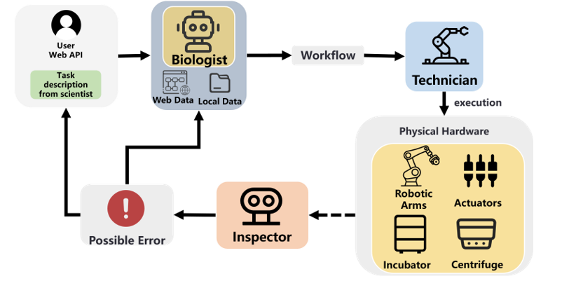

BioMARS: A Multi-Agent Robotic System for Workflow Automation in Biological Experiments
BioMARS pioneers full-stack automation of biological experiments by integrating large language models (LLMs) and vision-language models (VLMs) into a multi-agent robotic system.
It empowers AI agents to autonomously plan, execute, and validate biological procedures such as cell passaging and protocol optimization, reducing human workload and improving reproducibility.
System Architecture
The BioMARS system adopts a modular design, integrating robotic control units with semantic reasoning capabilities. It supports both low-level execution and high-level autonomous decision making.
Three-Agent Collaboration
1. Biologist Agent
Retrieves and synthesizes protocols from literature using retrieval-augmented generation (RAG), adapts them to current lab constraints (inventory, equipment), and outputs executable instructions.
2. Technician Agent
Converts natural language protocols into robotic commands. Employs dual-module generation & checking to achieve a 96.4% accuracy in instruction mapping.
3. Inspector Agent
Performs real-time error detection during experiment execution using a ViT + VLM dual-stage framework. Detects over 23 common lab anomalies with 95.7% precision.
Experiment Results
- Cell Passaging: Comparable to human performance on HeLa, Y79 lines. BioMARS achieved >92% viability, 12–18% lower coefficient of variation, and 90% time reduction.
- iPSC-RPE Optimization: Outperformed Bayesian and GPT-4o baselines. Reached a pigmentation score of 0.5913 in 20 iterations (vs 0.3130 and 0.4344).
Future Work
BioMARS aims to extend its autonomous reasoning capabilities and support broader laboratory environments. Future updates will include enhanced anomaly handling and domain-specific agent customization.